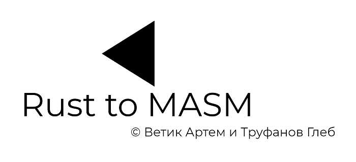
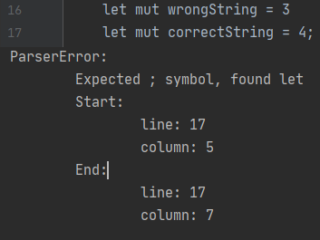
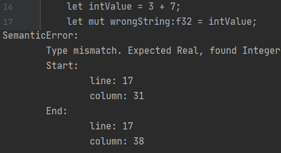

Содержание
О компиляторе
Курсовая работа по предмету Системное программное обеспечение. Простой транслятор с языка программирования Rust на MASM.
Лексический анализ
- Поддержка целочисленных, вещественных, строковых, логических типов
- Поддержка однострочных и многострочных комментариев
- Сохраняется позиция начала и конца каждого токена
- Поддержка следующих ключевых слов
fn, for, if, loop, while, else, let, mut, f32, i32, usize, println, print, break, return, true, false, bool
Синтаксический анализ
Объявление переменной
let var1; // без инициализации и без типа
let var2: i32; // без инициализации и с типом
let var3 = 3.0; // с инициализацией и без типа (тип определится сам)
let var4:f32 = 5.0; // с инициализацией и с типом
let (a, b, c) = (1.0, true, 123); // групповая инициализация
При групповой инициализации тип переменной не указывается и определяется автоматически.
Объявление массива
let arr1[i32; 4]; // без инициализации
let arr2:[bool, 4] = [true, !false, false, !true]; // с инициализацией
Также переменная и массив могут быть помечены как mutable с помощью ключевого слова mut, например:
Это означает что переменная может быть изменена больше одного раза.
Обращение к элементу массива
Поддерживается возможность доступа к произвольному элементу массива
let mut arr:[i32; 4] = [1,2,3,4];
arr[3] = -4;
arr[0] = arr[3];
Условные конструкции
if (a > 10 || a < -10) {
// something
}
else if (b == 0 && a != 10) {
// something
}
else ...
Количество else неограничено
Циклы
while (i < 100) {
// something
}
loop { // бесконечный цикл, выход через break или return
// something
}
Вывод
Для вывода массива целиком используется формат вывода {:?}. Для переменной: {}
println!("array: {:?}\nvariable:{}", arr, var);
Объявление функции
Поддерживается объявление функции, которая может принимать как переменную, так и массив. Возвращаемым значением функции может быть переменная любого типа.
fn quick_sort(mut array: [i32; 10], first: usize, last: usize) {
// something
}
Функция sqrt()
Для чисел типа f32 поддерживается вызов функции sqrt через точку. Выражение вернет корень вещественного числа.
let two = 2.0;
let sqrVar = two.sqrt();
Особенности
- Программа на входном языке должна содержать хотя бы одну функцию.
- Внутри каждого блока с фигурными скобками может быть неограниченное количество вложенных блоков. Также может быть неограниченное число вложенных конструкций
if ... else, while, loop
- Инициализировать переменную можно любым выражением, имеющий какой-либо значимый тип. Таким образом после знака равно может быть любое арифметическое или логическое выражение, состоящие из переменных, вызовов функций, обращений к элементам массива. Проверка на соотвествие типов происходит в семантическом анализе.
- Индексом для обращения к элементу массива также может быть любое выражение (см. пункт выше)
Синтаксические ошибки
При возникновении синтаксической ошибки компилятор прекращает дальнейший разбор и оповещает пользователя о соответствующей синтаксической ошибке. При этом компилятор выводит место, в котором произошла синтаксическая ошибка и предполагает что должно было быть на этом месте.

AST дерево
На этапе синтаксического анализа происходит построение абстрактного синтаксического дерева для дальнейшего использования в семантическом анализе и генерации кода.
Семантический анализ
Осуществляет проверку на семантическую корректность исходного текста программы. Реализованные проверки:
- Соответствие типов данных в арифметических и логических выражениях.
- Соответствие типов данных при инициализации и присваивании переменной и массива
- Соответствие размера массива и числа присваиваемых элементов
- Соответствие числа элементов в групповой инициализации
- Проверка на существование переменной и массива при их использовании
- Проверка на инициализацию переменной при ее использовании (недопускается использование неинициализированных переменных и массивов)
- Проверка на повторное присваивание переменной или массива, не помеченного как
mut
- Проверка объявление переменной или массива с уже существующим именем
- Поддержка локальных переменных и массивов
- Проверка обращения по индексу массива. Недопускаются отрицательные константы в индексе
- Проверка условий в конструкциях
if и while. Допускаются условия только типа bool
- Проверка соответствия числа форматов вывода и передаваемых аргументов в функции
println!(). Таже недопускается исользование формата вывода массива для переменной и наоборот.
- Проверка на существование вызываемой функции
- Проверка на соответствие числа и типов передаваемых в функцию агументов
- Проверка на наличие в функции ключевого слова
return и соответствие возвращаемого значения
Семантические ошибки
В случае семантической ошибки компилятор прекращает дальнейший разбор и выводит описание ошибки и ее место в тексте.

Генерация кода
Выходным языком был выбран MASM
- Все переменные и массивы в ассемблере объявляются как локальные для каждой функции. Для того, чтобы избежать повторения имен, в случае если переменные являются локальными на языке Rust, повторяющиеся имена помечаются дополнительным нижним подчеркиванием
_
- В корне с компилятором находится папка, содержащая бинарный файл со всеми ключевыми словами языка ассемблер. Если название переменной на языке Rust совпадает с ключевым словом на ассемблере, то она дополнительно помечается нижним подчеркиванием
- В ассемблере были использованы два типа данных:
DWORD и REAL8
- Параметры в функции передаются только через стек
Авторы
Студетны 2-го курса БГТУ "Военмех" группы И584
© 2020 Ветик Артём & Труфанов Глеб

 1.8.18
1.8.18